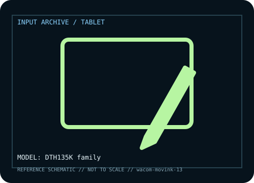

[ PEN TABLETS AND DIGITIZERS // IDENTIFIED COMPONENT ]
Wacom Movink 13
Portable OLED pen display with thin enclosure and pen input for mobile creative work.

MODEL IDENTIFICATION: Manufacturer model / identifier: DTH135K family. Compare the unit label, regional suffix, and revision against manufacturer documentation before repair or compatibility claims.
Model specifications
| Catalog subcategory | Pen tablets and digitizers |
|---|---|
| Exact model / ID | DTH135K family |
| Model-specific features | 13.3-inch OLED, Pro Pen 3 support, slim body and USB-C; bundle and touch features vary. |
| Interface and host support | USB-C host needs video and data support; power/adapter requirements depend on host. Driver enables pen features. |
| Revision / driver caveat | Verify DTH135K, regional model, cable and host DisplayPort Alt Mode; USB-C connector alone is insufficient. |
Preservation and service notes
Protect OLED from pressure, store pen/cable in sleeve, clean approved cloth and log host/cable/driver.
Record the as-found label, accessories, host OS, driver or firmware version, and test method. Separate observed condition from published specifications; family-level claims are not proof of an individual unit's revision.
Manufacturer source
- Wacom Movink 13 — manufacturer model pageModel-specific manufacturer reference for identifying specifications, regional SKU, and linked current support documentation.
Manufacturer pages can change or retire. Preserve the applicable manual and note its revision when documenting a physical device.